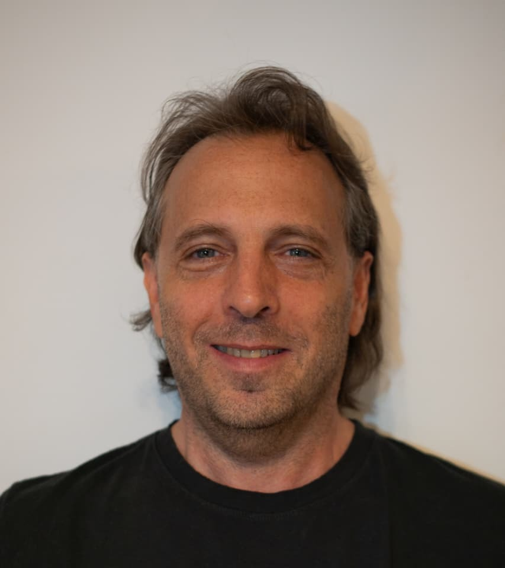

Psicólogo · Gran Maestro de Ajedrez
Cada decisión
es una jugada.
Psicólogo especialista en Ludopatía y en Psicología del Alto Rendimiento. Aplico la misma visión estratégica que me llevó a ser Gran Maestro de Ajedrez para ayudarte a recuperar el control de tus decisiones, dentro y fuera del tablero.
Especialidades
Tres formas de recuperar el control.
Cada área de trabajo parte de la misma pregunta: qué jugada te conviene hacer ahora.
Ludopatía
Tratamiento de adicciones conductuales con un enfoque clínico y estratégico. Te ayudo a recuperar el control de los impulsos y a construir una gestión saludable del riesgo.
Psicología y Alto Rendimiento
Entrenamiento mental para deportistas y profesionales que buscan sostener su nivel bajo presión: toma de decisiones, resiliencia y gestión emocional en la alta competencia.
Estrategia y toma de decisiones
Como Gran Maestro de Ajedrez y Licenciado en Psicología, aplico una metodología propia para analizar problemas complejos y resolver conflictos estratégicos.
Cómo trabajamos
Todo proceso tiene tres tiempos.
Como en una partida, el orden importa: primero se entiende la posición, después se juega y por último se consolida lo ganado.
Apertura
La primera consulta
Relevamos tu posición real: qué te trae, qué intentaste antes y qué querés lograr.
Medio juego
El trabajo de fondo
Herramientas concretas, sesión a sesión, ajustando el plan según cómo responde el tablero.
Final
Consolidar lo ganado
El objetivo no es ganar una partida: es que sepas jugar solo la próxima.

Sobre mí
Dos tableros, una misma cabeza.
Soy Licenciado en Psicología y Gran Maestro de Ajedrez. Durante años, el ajedrez de alto nivel me entrenó a pensar bajo presión, calcular riesgos y sostener la calma cuando una decisión importa de verdad.
Hoy aplico esa misma mirada en el consultorio: en el abordaje de las adicciones conductuales y en el entrenamiento mental de deportistas y profesionales que necesitan decidir bien justo cuando más cuesta.
- Formación
- Lic. en Psicología
- Título
- Gran Maestro FIDE de Ajedrez
- Especialidades
- Ludopatía · Psicología del deporte
- Modalidad
- Presencial y online
Contacto
Escribime y arrancamos.
El primer contacto es confidencial. Contame tu situación y coordinamos una consulta.
Diseño web
Este boceto lo diseñó Teo Cicciari
¿Querés un sitio así de cuidado para tu consultorio o marca profesional? Mirá más referencias, estilos y precios, y pedí el tuyo.
Ver referencias y precios ↗